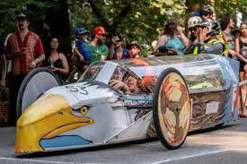

Portland, Oregon has a talent for turning chaos into tradition. Every summer, Mount Tabor Park hosts the Adult Soapbox Derby, where locals race homemade cars down a steep hill in wild costumes. Since 1997, it’s been less about winning and more about creativity — people show up with vehicles shaped like tacos, sharks, and rockets, cheered on by thousands.
Not far away, in Tualatin, the West Coast Giant Pumpkin Regatta takes things even further. Every fall, racers climb into hollowed-out pumpkins — some weighing over a thousand pounds — and paddle them across a lake. Costumes, splashes, and laughter fill the day as the city celebrates pure, pumpkin-powered chaos.
The legend of Benny “Gourdman†Price isn’t a true Portland ghost story, but it feels like it could be. It captures the city’s mix of humor, DIY spirit, and Halloween weirdness. After all, if any place would be haunted by a pumpkin racer who never finished the race… it’d be Portland.
Every October, Mount Tabor Park turns into glorious chaos for the Adult Soapbox Pumpkin Race — a downhill event where adults with duct tape, bad ideas, and too much cider race pumpkins on wheels. The rules are simple: it has to be a real pumpkin, it has to roll, and you have to be brave enough to ride it down a hill slick with leaves and cider spills.
But every year, as the sun sets and fog drifts through the park, people whisper about Benny “Gourdman†Price. Back in 2016, he built the most aerodynamic gourd in Oregon — polished rind, wooden wheels, orange duct-tape suit. He yelled “Gourd speed!†and vanished mid-race. No crash. No splatter. Just his glove and glowing orange skid marks.
Now racers say when the final heat runs and the fog gets thick, you can still hear him whispering through the trees — “Goooord speeeeeed…”